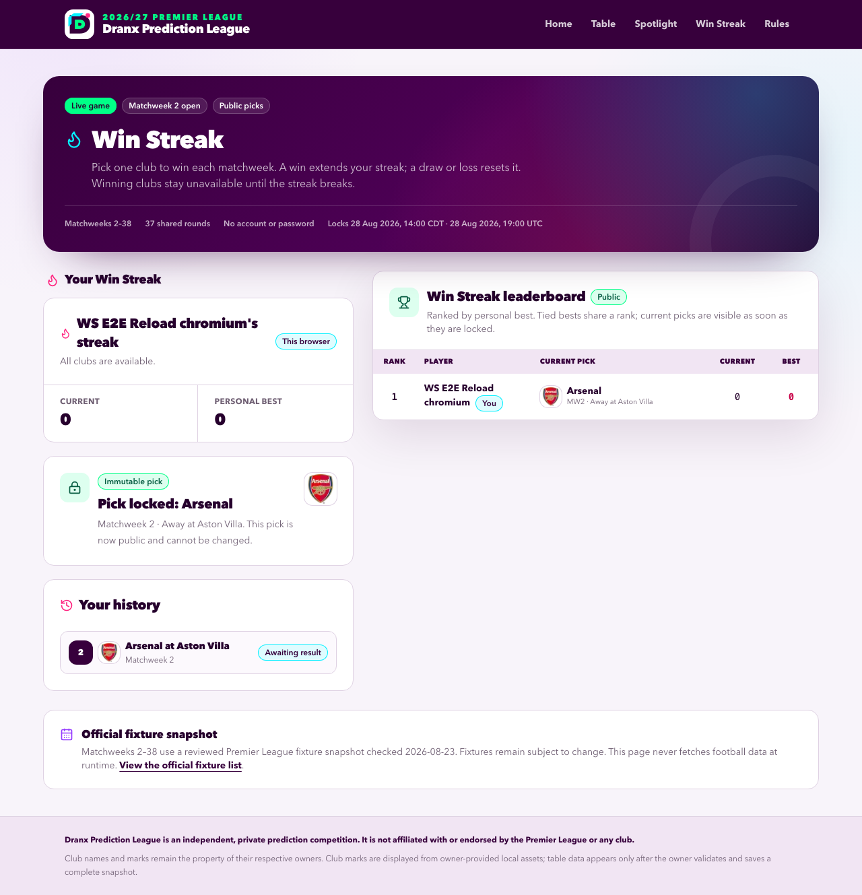
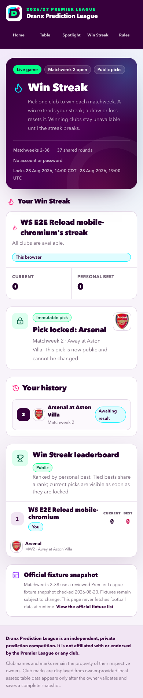

Win Streak
- Season: 2026/27 Premier League
- Contest window: Matchweeks 2–38
- Public route:
/win-streak - Owner results route:
/admin/win-streak - Status: Released and production-verified on August 23, 2026
Win Streak is a separate Dranx mini game. A participant chooses one club to win in each matchweek. A draw or loss breaks the current streak, but nobody is eliminated: the participant starts another attempt while their personal best remains on the public leaderboard.
The game uses the site's existing identity, responsive navigation, semantic colour tokens, buttons, cards, and canonical local club badges. It does not change the season-table prediction game, Spotlight accuracy, or either existing leaderboard.
Joining and identity
The public leaderboard is visible without entering a name. To play, a participant enters a display name containing 2–40 characters. The server creates one season profile and places a random receipt in that browser as an HttpOnly, SameSite Strict cookie; only the receipt hash is stored in PostgreSQL.
There is no account, password, email address, or name-based recovery. A normalized display name can belong to only one profile, and another browser cannot claim or resume it by typing the same name. Clearing or losing the receipt cookie makes that profile unrecoverable unless a future owner-supported recovery process is deliberately added. The release caps the season at 500 profiles and applies persistent creation and pick rate limits.
The public leaderboard shows every participant's display name, best streak, current streak, and current-matchweek pick with its opponent and venue. It does not publish receipt tokens, profile identifiers, or database identifiers.
Making a pick
The contest begins with Matchweek 2. Every pick for a matchweek locks at that round's earliest persisted fixture kickoff, even when the selected club plays later. The round deadline and PostgreSQL clock are the write authority; a stale browser cannot submit after the deadline.
Before confirmation, the page shows all ten fixtures and all 20 canonical club marks in one compact picker. A used club remains visible but disabled with a written explanation. The confirmation dialog repeats the club, opponent, venue, matchweek, and deadline. A confirmed pick is immutable.
Multiple participants may choose the same club. Participants may also choose opposite clubs in the same fixture; the one shared fixture result resolves both picks consistently.
Streak rules
Scores are derived from immutable picks and shared round results.
| Round outcome | Current streak | Personal best | Club availability |
|---|---|---|---|
| Picked club wins | Add one | Keep the greater of the old best or new current streak | Keep every winning club in the active streak unavailable |
| Picked club draws | Reset to zero | Preserve | Unlock all clubs |
| Picked club loses | Reset to zero | Preserve | Unlock all clubs |
| Picked fixture is void | Preserve | Preserve | Return the voided club; retain earlier winning-club restrictions |
| Participant misses the round | Preserve | Preserve | Retain earlier winning-club restrictions |
Late joiners start in the active round with no retroactive missed-round penalty. A club becomes restricted only after it wins for that participant's active streak. Draws and losses reset the streak and clear the entire restricted-club set; missed and void rounds do not.
Leaderboard rules
- Rank solely by personal-best streak, highest first.
- Give equal best streaks the same competition rank. Best streaks
3, 3, 1receive ranks1, 1, 3. - Alphabetize tied display names for stable presentation; alphabetical order is not an additional tiebreaker.
- Show current streak and current-matchweek pick as supporting public information. Neither changes rank.
- Keep zero-best profiles visible. A failed pick does not eliminate a participant.
Official fixture snapshot
The checked-in snapshot parses and validates all 380 fixtures from the Premier League's complete official 2026/27 fixture list, then retains the 370 Matchweek 2–38 fixtures used by the contest. It also uses the official fixture schedule announcement for the final-matchweek basis. Both sources were checked on August 23, 2026. The normalized fixture hash is f756c4790b6b0acd5ee4b351eb06cc53295078716b62018c20868f66a394848a.
Published UK kickoff times are retained where the source supplies them. Date-only weekend and bank-holiday fixtures default to 15:00, date-only midweek fixtures default to 20:00, and Matchweek 38 defaults to the league's published 16:00 simultaneous kickoff. The generator interprets those local values in Europe/London and stores the corresponding UTC instants. These reviewed defaults are schedule placeholders, not invented result facts, and remain subject to official change.
Matchweek 2 begins with Crystal Palace v Manchester City at 2026-08-28T19:00:00.000Z. Matchweek 38 is scheduled for May 30, 2027. Premier League fixtures remain subject to change.
No deployed request contacts the Premier League or another football-data source. The canonical JSON and seeded database rows are the runtime source. The owner-run update workflow checks the official page offline before ordinary result work:
- No source drift means no fixture file, seed, database, commit, or deployment change.
- A kickoff-only change for a future, unpicked, unresolved fixture may be reviewed, regenerated, tested, released, and applied with the targeted Win Streak seed.
- A club, pairing, matchweek, expired-round, picked-fixture, or resolved-fixture change fails closed for explicit owner review.
- The fixture workflow never runs the general production seed or rewrites result facts.
Result operations
The authenticated /admin/win-streak desk exposes only the earliest unresolved round. It requires one explicit Home win, Draw, Away win, or Void selection for each of the round's ten fixtures, a reviewed source URL, the UTC capture time, and an explicit warning acknowledgement when Void is used.
The server accepts the transition only after all ten persisted fixture kickoffs have passed. One atomic statement verifies the ordered round, updates all ten fixture results, records the round's source and content hash, writes the audit event, and advances public scoring. Resolved fixture and round facts are immutable. Repeating or racing the transition is a no-op conflict, not a second result publication.
The owner-run update-results workflow checks fixture drift first and then updates every newly completed Win Streak round through this authenticated desk. On August 23, 2026, Matchweek 2 had not started, so there was no result backfill to perform.
Storage and security boundary
The live game adds win_streak_rounds, win_streak_fixtures, win_streak_profiles, and win_streak_picks. Database constraints repeat the season, current-round, one-pick, round-deadline, immutable-club, result-order, and safe-fixture-update rules. Public reads are capped and make up to three consistency attempts so one page cannot combine leaderboard facts from before and after a concurrent round publication.
The browser stores no editable Win Streak state in localStorage. Server actions validate typed payloads, require same-origin requests, sample PostgreSQL time for deadlines, rate-limit profile and pick mutations, and retain only the receipt hash. Fixture and result acquisition remain offline owner operations; there is no football API, scraper, webhook, or cron in the deployed application.
Verified interface
The interactive flow was exercised against a production build and isolated Neon database across desktop Chromium, 320-, 390-, and 430-pixel Chromium, and mobile WebKit. It covered anonymous leaderboard access, name creation, immutable confirmation, keyboard selection and dialog dismissal, two profiles with opposing fixture picks, public current picks, reload persistence, name-takeover denial, light/dark mode, official marks, clean console output, no external runtime football requests, and no page-level horizontal overflow. Unit and isolated integration tests cover shared result publication plus the win, reset, void, and missed-round transitions.
PR #39 merged as 19bf11b4df43f8c3410f704fb278d1d4bdd845b5. Migration 0010 and only the targeted Win Streak seed produced 37 rounds and 370 fixtures in production with zero profiles, picks, or results. Ready deployment dpl_BTncZC77GmA3EXtaUjAKvfWZvRzP owns the stable production alias. The guarded anonymous production smoke passed desktop Chromium, 390-pixel mobile Chromium, exact 320/430-pixel reflow, and mobile WebKit; final database read-back found no participant writes, and bounded error, fatal, and HTTP 5xx log queries were empty.
Desktop

Mobile

The screenshots use isolated QA profiles and data. They are not production participant records.
Generated deterministically from docs/WIN-STREAK.md. Canonical SHA-256: ea922cf06f8e5c0f4e3a058391c10c0aa0dc33c56dbdfc6da3b455c0a8960e9f.